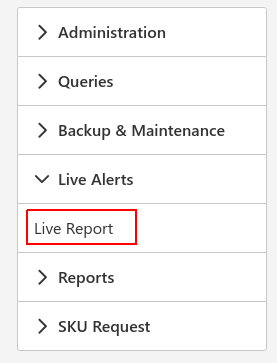
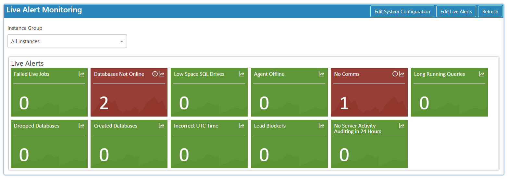

Introduction
To get started select the live alerts Icon and choose Live Report:

The report monitors the success and errors of the standard and custom live alerts.

Standard Live Alerts
- Failed Live Jobs - SQL Server Jobs failing will get flagged by this alert allowing you to take action to fix them.
- Database Not Online - flags databases with the status offline or single user.
- Agent Offline - reports on SQL Server Agent. The alert will not report if you are running on express.
- Low Space SQL Drive - will be reported when drives have less than 10% space.
- No Comms - flagged when there is no connection to the server. Possibilities include the server being off, firewall blocking the connection or the server being to busy to accept connections.
- Incorrect UTC Time - if the time is more than 10 minutes out it will be flagged by the alert.
- Created Databases and Dropped Databases - Reports on newly created and dropped databases within the last 24 hours.
- Replication Issues - reports on SQL Server Replication typical issues allowing it to be easily monitored.
- Long Running Queries - flags queries that take more than 2 minutes to run.
- Lead Blockers - reports if things are blocked for more the 2 minutes.
- No Server Activity Auditing in 24 hours - flags servers that have had nothing changed or reported within the last 24 hours as it would be unusual in production environments.
To view more details simply press the view more details icon to trigger a pop up with the details.